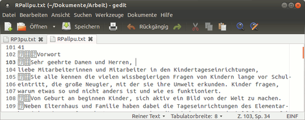

djvused
Dieser Artikel wurde für die folgenden Ubuntu-Versionen getestet:
Ubuntu 14.04 Trusty Tahr
Zum Verständnis dieses Artikels sind folgende Seiten hilfreich:
 djvused
djvused  ist ein mächtiges Kommandozeilenwerkzeug zur Bearbeitung von DjVu-Dateien. Es kann dazu genutzt werden, Metadateien und verborgenen Text für bestehende DjVu-Dateien zu erstellen, auszulesen, sie nach einer externen Bearbeitung wieder einzufügen, Seiten aus Dokumenten zu extrahieren, Vorschaubilder zu produzieren u.v.m. Es ist Teil von DjVuLibre und im Paket djvulibre-bin enthalten. dvjused kann über Skriptdateien, von der Kommandozeile oder der Standardeingabe aus gesteuert werden. djvused ist sicher kein Zufall...
ist ein mächtiges Kommandozeilenwerkzeug zur Bearbeitung von DjVu-Dateien. Es kann dazu genutzt werden, Metadateien und verborgenen Text für bestehende DjVu-Dateien zu erstellen, auszulesen, sie nach einer externen Bearbeitung wieder einzufügen, Seiten aus Dokumenten zu extrahieren, Vorschaubilder zu produzieren u.v.m. Es ist Teil von DjVuLibre und im Paket djvulibre-bin enthalten. dvjused kann über Skriptdateien, von der Kommandozeile oder der Standardeingabe aus gesteuert werden. djvused ist sicher kein Zufall...
Installation¶
Benötigt wird das Paket[1]
djvulibre-bin
 mit apturl
mit apturl
Paketliste zum Kopieren:
sudo apt-get install djvulibre-bin
sudo aptitude install djvulibre-bin
Benutzung¶
Die allgemeine Syntax auf der Kommandozeile[2] lautet
djvused DJVUDATEI.djvu -OPTION(EN)
Dabei lassen sich die Befehle entweder auf das gesamte Dokument, oder aber auf eine einzelne Seite beziehen; ein Auswahl mehrerer Seiten ist leider nicht direkt möglich; ggf. können dafür kleine "loops" verwendet werden.
Optionen¶
| Option | Funktion |
-v | "gesprächige" Ausgabe: djvused wechselt in eine interne Shell, der Prompt im Terminal ändert sich, und es wird eine kurze Erläuterung zu dem durchgeführten Kommando angezeigt. Nützlich, um djvused-Skripte auf Fehler zu überprüfen und für die interaktive Verwendung von djvused-Befehlen auf der Standard-Eingabe |
-f SKRIPTDATEI | Veranlasst djvused, Inhalte und Befehle aus der Datei SKRIPTDATEI zu verwenden. |
-e 'BEFEHL(E)' | Führt dazu, dass djvused die nach der Option aufgeführten Befehle ausführt. Die djvused-Befehle sollten in einfache Anführungsstriche gestellt und durch ";" getrennt werden, um ungewollte Effekte zu vermeiden ("unwanted shell expansion"). |
-s | Wird verwendet, um die verwendete Datei nach Abarbeitung der angegebenen Befehle zu sichern; ähnlich der Ausführung des Befehls save direkt vor Beenden des Programms. |
-u | Versteckter Text und Anmerkungen werden in UTF-8 abgespeichert, statt nicht-ASCII-kompatible Zeichen (Umlaute u.ä.) in Form von oktalen Escape-Sequenzen zu enkodieren (was allerdings die maximal mögliche Portabilität gewährleisten würde). Diese Option ist nützlich, um die Ergebnisse zu überprüfen oder händisch zu bearbeiten. Sie führt zudem unter Windows zur Erzeugung von UTF-8 BOM  . . |
-n | Führt dazu, dass djvused save-Befehle ignoriert; sinnvoll, um bei Fehlerabarbeitung nicht unbeabsichtigt auf der Festplatte gespeicherte Dateien zu überschreiben. |
Befehle zu -e¶
djvused liefert eine große Vielfalt unterschiedlichster Befehle, hier werden nur die gebräuchlichsten aufgeführt; eine komplette Übersicht liefert die Manpage des Programms.
Auswahl¶
Mehrseitige DjVu-Dateien bestehen aus mehreren Komponenten. Einige beinhalten nur Informationen zu einzelnen Seiten, andere verwalten Daten für mehrere oder alle Seiten, gemeinsame Bild-Daten, Anmerkungen oder Vorschaubilder. Viele der dvjused-Befehle bearbeiten ausgewählte Komponenten-Dateien; zunächst werden alle Komponenten angesprochen. Nachfolgende Befehle sind nützlich, um die Auswahl zu verändern.
| Auswahl-Befehl | Funktion |
n | gibt die Anzahl der Seiten eines Dokumentes aus |
ls | listet alle Bestandteile des Dokuments auf. Jede Zeile beinhaltet (so in der Datei vorhanden) eine Seitenzahl, einen Buchstaben, der die Art des Bestandteils kennzeichnet, die Größe, sowie einen "Identifier" des Bestandteils. Dabei steht P für Seitendaten ("page data"), I für gemeinsame Bild-Daten ("shared image data"), A für gemeinsame Anmerkungen ("shared annotation data") und T für Vorschaudaten ("thumbnail data"). Wenn verwendet, wird nach dem Identifier auch der Seitentitel aufgeführt (siehe Seitentitel). Beispiel: 2 P djvu0001 Kapitel_1, steht für: Seite 2 des Dokumentes, Seitendaten, Identifier djvu0001, Seitentitel Kapitel_1 |
select DATEI-ID | wählt die durch die DATEI_ID bezeichnete Datei; das Argument muss entweder eine Seitenzahl oder der Identifier einer Komponente sein. Ohne DATEI-ID werden alle Komponenten verwendet. |
select-shared-ant | wählt eine Datei mit gemeinsamen Anmerkungen aus - die DjVu-Software unterstützt derzeit nur die Auswahl einer einzelnen derartigen Datei. Sie enthält Anmerkungen zum gesamten Dokument, nicht zu einzelnen Seiten. Falls eine solche Komponente nicht existiert, wird eine Fehlermeldung ausgegeben. |
create-shared-ant | wählt eine Komponente mit gemeinsamen Anmerkungen, oder legt diese an, wenn sie nicht existiert, und bindet sie in alle Seiten des Dokuments ein. |
showsel | zeigt die derzeit ausgewählte Komponente im selben Format wie ls |
Text und Anmerkungen¶
Die Befehle zu den Metadaten sind nach ähnlichem Muster aufgebaut. Es gibt die Befehle zu print (Ausgeben), remove (Entfernen), set (Erstellen), z.T. auch output (Gesamtausgabe der Inhalte), die Kategorien txt (verborgener Text), ant (Anmerkung "annotation"), meta (Medataten, Teilmenge von ant, aber in anderer Syntax), xmp XML-formatierte Inhalte), outline (Inhaltsangabe und Lesezeichen), ggf. zu den Kategorien noch spezielle Angaben (pure, merged etc.) Die output-Befehle erzeugen jeweils Skript-Dateien mit gefundenen den Inhalten; die jeweiligen Skripte werden durch eine Umleitung erstellt, die nach dem Befehl erfolgt ( > DJVUSETFILE.dsed), ohne diese Umleitung wird der Inhalt nur im Terminal ausgegeben. Insofern ist die Angabe dieser Namen - anders als im manfile angegeben - unter Ubuntu nicht wirklich optional.
Hinweis:
Die set-Befehle setzen das Vorhandensein einer entsprechenden Skript-Datei voraus, die in der Syntax den Ausgaben der jeweiligen print-Befehlen entsprechen müssen.
| Text, Anmerkungen, Metadaten, Inhaltverzeichnis/Lesezeichen | ||
| Befehl | Funktion | Syntaxbeispiele |
print-pure-txt | Gibt den reinen Text ohne Lageinformation im Dokument aus (ähnlich wie djvutxt ); ggf. werden Strukturdetails durch Steuerzeichen wiedergegeben (siehe Bild rechts). Text aus verschiedenen Seiten wird standardmäßig durch "form feed characters" ("\f"), Zeilen durch Zeilenumbrüche ("\n") getrennt. Spalten, Regionen und Absätze werden z.T. durch vertikale Tabulatorzeichen ("\013"), Gruppentrennzeichen ("group separators") ("\035") bzw. Einheitentrennzeichen ("unit separators") ("\037") getrennt. |  |
print-txt | Gibt den verborgenen Text mit allen Informationen zu den Strukturelementen aus. | Die Blöcke des verborgenen Textes werden durch Listeneinträge wiedergeben, die jeweils einzelne Strukturkomponenten darstellen. Die Einträge haben folgende Form:(type xmin ymin xmax ymax ... )Symboltypen können page (Seite), column (Spalte), region (Region), para (Paragraph), line (Zeile), word (Wort), oder char (Zeichen) sein, in absteigender hierarchischer Ordnung. Die Zahlwerte xmin, ymin, xmax, und ymax sind die Koordinaten der Rechtecke, welche die Position der Strukturkomponenten bestimmen. Sie werden in Pixeln angegeben, Ausgangspunkt ist die linke untere Ecke der jeweiligen Seite. Der verbleibende Teil ist entweder eine Textzeichenkette oder eine Angabe zu einer untergeordneten Strukturkomponente. Beispiel:(page 0 0 2452 3492
(column 276 3166 686 3246
(para 276 3167 686 3246
(line 276 3167 686 3246
(word 276 3167 686 3246 "Vorwort")))) |
remove-txt | Entfernt den verborgenen Text aus den ausgewählten Komponenten, 'select; remove-txt' würde sämtlichen verborgenen Text entfernen. | |
set-txt DJVUSEDTEXTFILE | Fügt verborgenen Text in die ausgewählten Seiten ein, der in der angegebenen Datei vorhanden ist. | |
output-txt | gibt ein djvused-Skript mit allen Informationen zu dem gespeicherten Text der gewählten Komponenten aus, das später bearbeitet und wieder eingespielt werden kann (mit Option -f). | |
print-ant | Gibt die Anmerkungen der gewählten Komponenten aus. | maparea ist dabei die gebräuchlichste Funktion, mit der z.B. Links auf externe Websites oder Hyperlinks innerhalb des Textes gesetzt und hervorgehoben werden können. Syntax ist (maparea url comment area ...) siehe URL, "comment" in Anführungszeichen, erzeugt einen Tool-Tip, der erscheint, wenn man im DjVu-Viewer den Mauszeiger über dem Link stehen lässt. Mit "area" wird die Einfassung des Bereiches definiert (Rechteck, Oval, Linie, etc.), angeben in Pixel, gerechnet von der unteren linken Ecke. Zusätzlich kann eine Farbe definiert werden, die dieser Rahmen haben soll. Beispiel (maparea "jsbien@uw.edu.pl" "Author" (rect 1062 2784 357 58) (border #00FFFF))Es können aber auch Angaben zur Darstellung im Viewer (Zoomfaktor, Hintergrundfarbe, Seitenmodus) gemacht werden. Weitere Details und Möglichkeiten sind in der manpage beschrieben. |
print-merged-ant | Verbindet die Anmerkungen, die in den gewählten Komponenten vorhanden sind, mit Informationen aus der gewählten Komponente, z.B. einer gemeinsamen Anmerkungsdatei. | |
remove-ant | Entfernt die Anmerkungen aus den gewählten Komponenten. | |
set-ant DJVUSEDANTFILE | Fügt Anmerkungen aus der angegebenen Datei in die ausgewählten Komponenten ein. | |
output-ant | Erstellt ein djvused-Skript mit den Informationen zu den Anmerkungen der gewählten Seiten, das dann bearbeitet und wieder eingespielt werden kann. | |
print-meta | Gibt die Metadaten aus, eine Teilmenge der Anmerkungen, die aber in andere Syntax dargestellt werden. | Metadaten werden in Paaren aus Schlüsselwort und Wert angegeben. Jede Zeile enthält den Schlüsselnamen, wie author, title, gefolgt vom Tab-Zeichen ("\t") und eine in Anführungszeichen gesetzte Zeichenkette, die den in UTF-8 encodierten Metadatenwert enthält (metadata ... (key value) ... ). Erwähnenswert sind zwei Sets von Schlüssselwörtern: eines angelehnt an das BibTex-System , das andere im Rückgriff auf PDF-DocInfo-Metadaten . BibTex-Schlüsselwörter werden immer kleingeschrieben, wie year, booktitle, editor, author, etc. DocInfo-Schlüsselwörter werden großgeschrieben, wie Title, Author, Subject, Creator, Produced, Trapped, CreationDate und ModDate. Die letztgenannten Werte sollten der Schreibung nach RFC 3339 entsprechen. |
remove-meta | Entfernt den Metadaten-Teil der Anmerkungen aus den gewählten Komponenten. | |
set-meta DJVUSEDMETAFILE | Erstellt den Metadaten-Teil der Anmerkungen aus der Datei DJVUSEDMETADFILE. Eventuell vorhandene weitere Anmerkungen bleiben unverändert. | |
output-all DJVUSEDFILE | Gibt ein djvused-Skript aus, das sowohl den verborgenen Text als auch die Anmerkungen für die gewählten Seiten beinhaltet. Man kann es bearbeiten und mit der -f-Option wieder einspielen. | |
print-outline | Gibt das Inhaltsverzeichnis wieder, falls vorhanden. | Die Outline-Syntax entspricht einer einfachen Liste der Form (bookmarks ...)Das erste Element ist das Symbol bookmarks. Die nachfolgenden Elemente sind Listen, die die obersten Outline-Einträge darstellen; jeder Outline-Eintrag wird durch eine Liste in folgender Art dargestellt (title url ... )Die Zeichenkette title ist der Titel des Outline-Eintrages. Die Zielzeichenkette URL kann eine %-Darstellung sein, oder aus dem Rautenzeichen ("#") gefolgt von einem/r Seitennamen/-nummer bestehen, oder aus dem Fragezeichen, gefolgt von Argumenten in cgi-Format, die vom DjVu-Betrachter interpretiert werden können. Die weiteren Einträge in der Liste beschreiben untergeordnete Einträge dazu. |
remove-outline | Entfernt das Inhaltsverzeichnis/Lesezeichen aus dem Dokument. | |
set-outline DJVUSEDOUTLINEFILE | Fügt ein Inhaltsverzeichnis in das Dokument ein, die Informationen werden aus der DJVUSEDOUTLINEFILE bezogen | |
save-Befehle¶
Durch die oben genannten Befehle werden die Bilddateien nur bearbeitet, nicht aber im Dateisystem gespeichert! Dafür stehen verschiedene Möglichkeiten zur Verfügung.
save-Befehle | Funktion |
save | Speichert das Dokument unter dem aktuellen Namen der Eingabedatei, falls Veränderungen vorgenommen wurden; entspricht der Option -s. |
save-bundled DATEINAME | Speichert die Datei unter DATEINAME als "bundled" mehrseitges DjVu-Dokument. djvmcvt bietet eine ähnliche Funktion. |
save-indirect DATEINAME | Speichert die aktuelle Datei als indirektes mehrseitiges DjVu-Dokument. Die Indexdatei heißt dann DATEINAME. Alle anderen Dateien werden im selben Verzeichnis wie der Index abgelegt. djvmcvt bietet eine ähnliche Funktion. |
save-page DATEINAME | Speichert die gewählte Komponente als DjVu-Datei DATEINAME. Wenn sie mit Daten aus anderen Komponenten (durch den sogenannten Inklusions-"chunk" (INCL) verknüpft ist, könnte eine Datei mit unerfüllten Abhängigkeiten entstehen. Solche Dateien sollten in ein mehrseitiges Dokument aufgenommen werden, das die entsprechenden Daten enthält (beispielsweise mit einer durch save-page-with erstellten Datei aus dem selben Dokument). |
save-page-with DATEINAME | Speichert die ausgewählte Komponente unter dem Namen DATEINAME ab und integriert alle aus anderen Komponenten eingebundenen Metadaten-Einträge. So entsteht in jedem Fall eine funktionsfähige DjVu-Datei. Wenn allerdings mehrere solcher Dateien wieder zusammenfasst werden, kann das zu überflüssiger Vervielfachung der Anmerkungsdaten führen. |
Andere Befehle¶
| andere Befehle | Funktion |
set-thumbnails sz | Erstellt Vorschaubilder in der Größe sz x sz Pixeln und fügt sie in das Dokument ein. DjVu-Betrachter können diese Vorschauen effektiv nutzen, ohne die gesamten Daten jeder Seite herunterladen zu müssen. Typische Größen liegen zwischen 48 und 128 Pixeln. |
remove-thumbnails | Entfernt zuvor erstellte Vorschaubilder, neue können dann mit set-thumbnail erstellt werden. |
help | Hilfefunktion für alle von djvused unterstützten Befehle. |
dump | Zeigt die EA-IFF-85-Struktur des Dokuments oder der ausgewählten Komponenten; ähnlich dem Programm djvudump . |
size | Gibt die Größe der gewählten Seite (Breite x Höhe in Pixeln) an. Die Größe wird in einer <EMBED...></EMBED>-Tag-kompatiblen Syntax ausgegeben. |
set-page-title TITEL | Legt einen Titel für eine Seite fest. Dieser Titel kann von von aktuellen DjVu-Betrachtern statt der Seitennummer angezeigt und für Auswahlbefehle verwendet werden. Es kann auch der ls-Befehl verwendet werden, um Seiten-Identifier oder Seitennamen anzuzeigen. Um einen Seitentitel zu löschen wird er mit dem Seiten-Identifier gleichgesetzt. |
Alternativen¶
Einige Dinge können auch mit anderen DjVu-Programmen erledigt werden, das Zusammenführen und Löschen von "bundled" DjVu-Dateien z.B. mit dvjm , siehe Einfügen und Löschen von Seiten. Einige Metadata-Editor-Funktionen liefert auch djvusmooth, zumindest anschauen kann man sich etliches auch im DjView.
 Übersichtsartikel zum Format
Übersichtsartikel zum Format- Erstellt mit Inyoka
-
 2004 – 2017 ubuntuusers.de • Einige Rechte vorbehalten
2004 – 2017 ubuntuusers.de • Einige Rechte vorbehalten
Lizenz • Kontakt • Datenschutz • Impressum • Serverstatus -
Serverhousing gespendet von